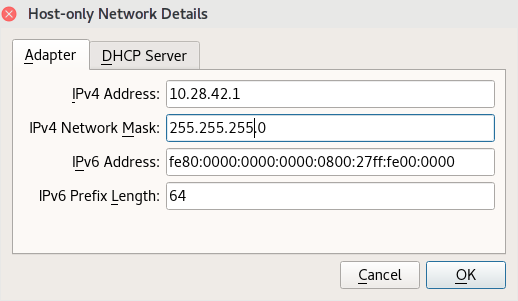

The cakelampvm project provides a Virtualbox VM that acts as an "internet in a bottle", serving up your web sites securely and only to your local host. The virtual machine provides DNS services (bind9), a Web server (Apache2), a full Ubuntu Linux desktop environment, the Fluxbox X window manager, and a suite of tools called the Feisty Meow® codebase . Together, these services provide you with a very flexible and powerful testbed for web development, especially suited for CakePHP. This VM was built with the assistance of and was partially funded by Saco Design of Winterport, Maine.
Commands in fixed-width bold below are intended to be typed into a bash shell running on the cakelampvm virtual machine. The bash shell can be obtained either by logging into the VM through ssh or by logging in directly to the Virtualbox VM console. You may find the ssh session more convenient, because copy & paste features work as expected.
Commands preceded by a greater-than symbol ('>') are intended to be run on the Host PC in a Windows command prompt (or in a bash prompt running on the Host PC).
Configuring host-only networking for the VM makes the VM completely local to your machine. The cakelampvm will not be accessible on the internet or from the LAN, and can only be accessed by your host PC. This is a key component of security for your VM and your host PC, and is considered a crucial configuration step.
Note: If the host-only or NAT network exist ahead of time, Virtualbox may complain about them even if they have the correct configuration. This can be corrected simply by opening the cakelampvm settings and selecting the appropriate network names again.
To configure the host-only network, follow these steps:

Additional information on host-only (and other) network adapter types is at: https://www.virtualbox.org/manual/ch06.html#network_nat_service
The NAT (Network Address Translation) network allows the VM to get off of the machine and onto the internet safely. It will use this interface for any communication off of the host machine. This is another crucial component for the security of the VM and your host PC. Since the real IP address of the VM is hidden behind the NAT firewall on Virtualbox, this keeps the VM safe from attackers, and hence your machine stays safe as well.
To set up the NAT network, follow these steps:
Using the Virtualbox interface, you should now be able to start your virtual machine. Virtualbox will complain if it detects any remaining configuration problems in the VM. The Linux boot sequence will show many lines of text, before bringing up a black console window with a login dialog.
If Windows complains about the Virtualbox application slamming into its firewall, then allow the Virtualbox to get through. Usually, telling Windows that once is enough, but if any odd network access problems result, edit the Windows firewall settings and allow Virtualbox to use both "Public" and "Private" networks. (Cortana can find the firewall settings if you ask her about 'firewall'. Within the firewall configuration dialog, look for "Allow an app or feature through..." on the left and configure Virtualbox from within that list.)
You can log in directly on the VM console with the developer account, but it is generally more useful to connect to the cakelampvm over ssh. If the networking has been established properly, you should be able to do this with:ssh developer@10.28.42.20
# or perform the equivalent connection with your ssh client.
And then provide the password to log in.
Once the DNS services are set up (discussed in detail below), you will be able to run the much friendlier command:
ssh developer@cakelampvm.com
It is important to set up ssh key forwarding to enable your use of git repositories while logged into the VM. Key forwarding should be enabled for the VM's two fake host identities:
cakelampvm.com
10.28.42.20
The cakelampvm v002 is released with the intention that it not need to be released again. Version 001 was not built with that explicit intention, which then required the release of Version 002. But we hope to not need a v003 release...
There is an update feature built into the VM that is quite easy to use. The updates are driven by the feisty meow script repository in conjunction with a local scripted command. To activate the "update process" for your VM, run the following commands on the VM:
# update to the latest version of feisty meow.
rpuffer $FEISTY_MEOW_APEX; reconfigure_feisty_meow
# enact any configuration changes needed, such as permissions and account setup.
revamp_cakelampvm
These two commands can be run at any time to patch up your VM to the latest.
Recent versions of feisty meow support a new "get_feisty" command, which will behave the same as the first line above. Once you have run the "puffer..." command above for the first time (on cakelampvm v002), this new command becomes available.
Here are some first steps that will make the vm your own:
passwd
The 'passwd' command will ask for your current password, and then for a
new password plus a verification of that new password.smbpasswd
git config --global user.email "developer@cakelampvm.com"
git config --global user.name "Developer J. Cakemo"
The site avenger scripts are documented separately within the feisty meow codebase. Consult the feisty meow readme file first, as it provides some valuable information on configuring the codebase initially. The site avenger script commands are documented in the feisty meow command reference file.
(The feisty meow codebase is already configured for the developer account on the cakelampvm virtual machine.)
The cakelampvm has been set up to provide a DNS server which will answer name lookup requests on any of the sites that the cakelampvm is hosting for you. It will also serve as a general DNS server for any other domains that need to be looked up.
To use the cakelampvm DNS, modify your host operating system network configuration by adding or changing the DNS server to use the guest VM's DNS service. The cakelampvm is available at the local IP address 10.28.42.20. (The DNS server can be tested with nslookup, dig and other tools.)
Note that the cakelampvm DNS should be listed first, if one intends to override any DNS names that actually exist out on the internet. Further, we have found it most effective to have *only* the cakelampvm as your DNS server, because a secondary DNS server can "take over" providing the name lookups, and thus foul up DNS requests that should succeed for your VM-hosted sites.
If your Host PC is running Windows, see the DNS configuration section below that is tailored to that operating system.
Important Note: It behooves you to remember to switch back to a normal DNS server configuration when you shut off the cakelampvm, or your machine will not know the names of any sites on the internet any more! The official Google DNS servers are 8.8.8.8 and 8.8.4.4.
Once the DNS server is properly set up (by whatever means necessary), these ping commands should get answering responses (from 10.28.42.20) on both the cakelampvm VM and on your host PC. Note: ping on Linux keeps going forever, so hit control-C when you are tired of seeing the pings:
ping cakelampvm.com
ping www.cakelampvm.com
Note that any other answer than 10.28.42.20 for the address is *bzzzt* wrong, and means something needs to be fixed.
If these pings succeed (which hopefully they will!), then try accessing the websites of each domain:
(browse to) http://cakelampvm.com
(browse to) http://mapsdemo.cakelampvm.com
These should show local sites on the VM rather than sites on the internet. If you instead get failures to find the domains, or if the "real internet" site comes up for cakelampvm.com (the page covered with red X marks and complaining), then the DNS is not hooked up properly yet.
The ipconfig tool will provide helpful information about your current networking and DNS configuration:
> ipconfig /all
The DNS configuration on Windows is somewhat byzantine. The pipe characters ('|') below are used to separate the menus or tabs or dialogs to traverse. Follow this path to get to the DNS config:
Control Panel | Network & Internet | Network & Sharing | click WiFI or Ethernet link near top right | click Adapter Settings button...
| click on the specific network device to modify | select Properties
Once the properties dialog is displayed, find "internet protocol version 4" in the list and double click it.
Change the DNS setting from "obtain...automatically" to "use the following dns addresses".
Enter 10.28.42.20 as the first DNS address and clear the second address (all blanks).
Hit okay, then okay, then close, etc to back out of adapter configuration.
If your pings are getting the wrong answers and you're certain the DNS settings on your Host PC are right, then you may need to flush your DNS cache, and that might be sufficient to start getting the right IP address. On Windows, the command for flushing DNS is:
> ipconfig /flushdns
and on Linux the flush DNS command can be many different things, but try these two most common options:
# restarts the client side DNS cache.
sudo service dns-clean restart
or
# restarts the nscd caching server.
sudo service nscd restart
After, this try the pings again. If they still fail, please go back
over your DNS configuration very carefully. The cakelampvm's DNS
feature *does* actually work, but operating systems sometimes do their best
to deny this.There is one caveat to be aware of when connecting to the cakelampvm.com domain. If you have accidentally added the "real" cakelampvm.com domain from the internet to your ssh known_keys at some point, then ssh will complain about connecting to the VM on the cakelampvm.com domain. This complaint will look like:
The authenticity of host 'cakelampvm.com (104.236.56.82)' can't be established.
Note that the IP address shown is not our beloved 10.28.42.20 local IP address.
To fix this, remove the entry pointing at the "real" site from the known_hosts file (ssh will print out the line number of the offending entry). The DNS configuration needs to be configured before you will get the warning about the cakelampvm.com domain. Up until then, the domain name is always referring to the site out on the internet with the red X's and warnings. See the DNS configuration section below to configure DNS the first time.
Once you connect to the VM and the ssh client records the VM's host key in your known_hosts, then you're in good shape. This state also gives you a "canary in a coal mine" warning system... Once the VM is registered as a known host, then any attempt to connect back to the "real" internet version of cakelampvm.com will garner a complaint from ssh. This version of the ssh warning should be heeded; you do not want to connect to the real internet site, and the warning indicates that the host PC is no longer using the DNS on the VM (since it reached the real internet site instead of the VM). That situation needs to be corrected by running through the DNS configuration section again (and testing the DNS until it is working).
If your DNS pings and lookups are functioning properly, but you're just not getting the right websites, then try clearing your browser's cache and shutting the browser application down. Then, start the browser up and try the address again. Often this cache dumping is enough to fix the browser so that you start seeing the local website versions on cakelampvm.com.
On the host computer, look for the guest vm as a networked computer called cakelampvm. This should provide some network shares using Microsoft SMB protocol, and they can be attached to using the "developer" user and its password.
On windows, one may want to mount this network location as a drive letter for easier access.
Currently, the root of all web servers is exposed as "www". Editing the files in those folders requires ownership by the developer user. The existing mapsdemo site is owned by a different user ("fred") rather than developer, mostly as a test case. The "fred", "developer", and "www-data" accounts on the VM have all been put into each others Unix "groups" so that they can access each other's files, and thus you may not notice any issues editing fred's files.
One should be able to create a new directory over the network also. Try creating a junk folder in the "www" folder, and then deleting it again. That should succeed, and this approach can be used to create folders (from the Host PC) that are owned by the developer user (on the VM). You should be able to create folders or copy files within the developer's home folder also ("/home/developer").
If you run into any permission problems that prevent file access, either remotely or within the VM itself, then try running this command to fix them (repeated from the section above about updating the cakelampvm):
revamp_cakelampvm
Afterwards, the www folder and others should allow the developer user to create new folders at will.
If you want to share a folder from the host to the guest, perhaps for driver updates or other conveniences, then make the share with these steps:
# make the guest's version of the shared folder
mkdir ~/shared
# mount the vm's share name onto the folder on the vm.
sudo mount -t vboxsf myshare ~/shared
[incomplete section]
If a feature called "X forwarding" is enabled in your ssh client, then you can start graphical applications on the VM and display them on your local machine. This works right away on most Linux hosts, but can also work on PCs with X window system installed. This section describes how to set up Cygwin to run X server, which enables X11 forwarding to your local display.
...{insert that info}...
Note: these instructions, even the quick approaches below, pale in comparison to the ease of use of the "standup" command in feisty meow's site avenger scripts. The standup command is detailed in the feisty meow command reference document. These instructions are for situations when the domain or site is idiosyncratic in some way that standup doesn't support.
To add a new website, you will first need to pick one of the DNS options below (A or B) depending on how you want to name the site. If the DNS name of the site is contained within another existing domain (e.g., "A.B.C" has subdomain A contained in domain B.C), use Option A. If the DNS name is a so-called "Second Level Domain" (SLD), then it stands on its own (e.g., "B.C" is an SLD).
Once the DNS option has been picked and implemented, continue to the next section of "Creating a New Apache Site".
For either Option A or Option B, first connect to the cakelampvm via ssh as the developer user, e.g.: ssh developer@cakelampvm.com
Let us say a customer needs an application called "excalibur". It will be a new subdomain within an existing domain, such as the "cakelampvm.com" domain, meaning we want the VM to start answering requests for "excalibur.cakelampvm.com".
Note that this option requires the containing domain "cakelampvm.com" to already exist before adding the subdomain; see DNS Option B below for details on how to add a containing domain for the first time.Run this command in a bash shell on the VM:
add_domain excalibur.cakelampvm.com
Done.
Note: the manual approach is not compatible with later use of feisty meow's "remove_domain".
Execute the following command to edit the DNS file for the cakelampvm domain:sudo vi /etc/bind/cakelampvm.com.conf
Add a stanza for the new site at the end of this file:
excalibur.cakelampvm.com. IN A 10.28.42.20
IN HINFO "linux server" "ubuntu"
Restart the DNS server:
sudo service bind9 restart
Afterwards, pinging excalibur.cakelampvm.com should work from both the guest VM and the host PC.
This is a similar procedure to Option A, but we will create a totally new config file for the new domain and add it to the bind directory. For this example, we need to add the site "excalibur.tv" into the DNS.
add_domain excalibur.tv
Done.
Note: the manual approach is not compatible with later use of feisty meow's "remove_domain".
Create a file called /etc/bind/excalibur.tv.conf for our new domain excalibur.tv with these contents:$TTL 1WThe gnarly prefix stuff above the "excalibur.tv." listing establishes configuration info for the new domain. This file relies on the existing cakelampvm.com infrastructure in DNS, such as the "ns" host, which is the domain's name server. However, the new domain does not live inside the cakelampvm.com domain.
@ IN SOA @ fred.cakelampvm.com. (
2017100801 ; serial
2H ; refresh
8M ; retry
14D ; expiry
6H ) ; minimum
IN NS ns.cakelampvm.com.
IN MX 10 mail.cakelampvm.com.
# new SLD for our excalibur site.
excalibur.tv. IN A 10.28.42.20
IN HINFO "linux server" "ubuntu"
Now that the config file is in place, edit "/etc/bind/named.conf.local" to add the new file by adding this bit of configuration at the end:
zone "excalibur.tv" in {
file "/etc/bind/excalibur.tv.conf";
type master;
allow-query { any; };
};
Restart the DNS server:
sudo service bind9 restart
Afterwards, pinging excalibur.tv should work from both the guest and the host.
First, connect to the cakelampvm via ssh as the developer user, e.g.: ssh developer@cakelampvm.com
Run this command in a bash shell on the VM:
add_apache_site excalibur excalibur.tv
(The first parameter is the application name, the second is the domain name.)
Done.
Note: the manual approach is not compatible with later use of feisty meow's "remove_apache_site".
For Apache, the choice of DNS Option A or B, subdomain or SLD, does not matter. The site configuration file just has to accurately specify the domain in question.
Start with the following template file for the new website, and modify it for the appropriate host name and "DocumentRoot" path:
<VirtualHost *:80>
ServerName excalibur.tv DocumentRoot /home/apps/excalibur
ErrorLog ${APACHE_LOG_DIR}/excalibur.tv-error.log
CustomLog ${APACHE_LOG_DIR}/excalibur.tv-access.log combined
Include /etc/apache2/conf-library/basic-options.conf
Include /etc/apache2/conf-library/rewrite-enabling.conf
</VirtualHost>
The above example is appropriate for our excalibur app in the excalibur.tv domain (using DNS Option B). Modifying the excalibur.tv references in it (and the path in the DocumentRoot) is sufficient to re-target it for any domain you want.
Copy the new site config file into "/etc/apache2/sites-available" with an appropriate file name that includes the site's domain name. We will call our config file "excalibur.tv.conf". If you developed the file in your home folder, this would be the command to move it up to Apache:
sudo cp ~/excalibur.tv.conf /etc/apache2/sites-available
Then tell apache to use the new file:
sudo a2ensite excalibur.tv
# the '.conf' portion of the filename is unnecessary for this command.
Finally, restart apache to get it to begin serving the site:
sudo service apache2 restart
Given the configuration above, your host PC should now be able to access the new website on the domain "excalibur.tv".
To test this, first try pinging the new DNS name:
ping excalibur.tv
If there are responses to the ping *and* the answer is 10.28.42.20, then it means the DNS is working.
If there are no responses or it's some other IP address talking back, check the instructions in the above DNS sections.
Once the DNS is working, try browsing to the site at "http://excalibur.tv". That should at least bring up the configured site storage path, even if nothing is being served from that folder yet.
If the new site is not showing up properly, try examining the apache logs for any error messages that can be corrected. The log files are stored in "/var/log/apache2" and are named after the website (if configured through the above process).
A Cheat sheet for the Vim editor (there are many of these available): https://vim.rtorr.com/
A git branching model that seems to work well: http://nvie.com/posts/a-successful-git-branching-model/
This is a basic guide to the Google Developer Console and API Key management: Google API Docs
Meld is a great comparison tool that displays differences between two files or directories or directory trees in a graphical view. Meld is pre-installed on the VM. This tool can be launched either in the VM's X Windowing System (on the console) or if X11 forwarding is enabled.
To run meld, just type this command:
meld A B
where A and B are either both file names or they are both directory names. If A and B are directories, meld will compare the entire tree structure between the two directories. It allows one to copy from one side to the other, even if the item that needs to be copied is an entire subdirectory.
Run this command:
ifconfig
In the results, look for "inet addr". There may be more than one, if there are multiple network interfaces.
The standard IP address is 10.28.42.20 for the cakelampvm.
When you've got the DNS and everything integrated, these commands will manage the vm's state:
First, log into the guest VM:
ssh developer@cakelampvm.com
Then, to reboot the guest VM:
sudo reboot
Or, to halt the guest VM:
sudo shutdown -h now
Using these commands is kinder to the VM than just cycling the power from the Virtualbox control panel.
This is the lowest level of plumbing for your VM. Hopefully you will not need to engage with this section. The most useful doc section here is the one below about the "Virtualbox guest additions", which you will probably need at some future point. Oracle releases updates to the guest additions fairly regularly.
The guest VM should already be set up appropriately. These steps are provided for reference and updates.
sudo mount /dev/sr0 /media/cdrom
Linux will mention that the device is mounted "read-only".
cd /media/cdrom
sudo sh VBoxLinuxAdditions.run
The network interfaces should already be configured on the guest within the Virtualbox configuration. This is available by clicking on the VM in the Virtualbox manager and selecting "Settings". These are the configuration settings used:
Adapter 1:Adapter 2:
Attached to: Nat Network
Name: NatNetwork
On the guest VM itself, the network settings are specified in a file called /etc/network/interfaces. Here are the current contents of that file:
source /etc/network/interfaces.d/*
auto lo
iface lo inet loopback
auto enp0s3
iface enp0s3 inet static
address 10.28.42.20
netmask 255.255.255.0
network 10.28.42.0
broadcast 10.28.42.255
dns-domain cakelampvm.com
dns-search cakelampvm.com
dns-nameservers 127.0.0.1 8.8.8.8
auto enp0s8
iface enp0s8 inet dhcp
To minimize the size used for the disk image, there are three major steps.
1. While running the VM, run this command:
sudo apt clean
This throws away any cached data from the apt tool, which can be substantial.
If there are other junk files you know of that can be removed, delete those now also.
2. Reboot the VM to the gparted ISO image (available at the gparted site) and run the following command:
sudo zerofree /dev/sda
This sets all free space to the zero byte, enabling Virtualbox to free that space in the next step.
3. Shut the vm down after zerofree is complete and run this command on the host PC (this is the Linux version of the command):
VBoxManage modifyhd --compact ~/cake_lamp_vm/cake-lamp-vm-hd.vdi
Replace the ~/cake_lamp_vm path with the real VM storage path. This command compacts the root (and only) partition of the VM.
After these steps are complete, the VM should be its minimal size.
This is all work that should already have been done. It is mentioned here just as breadcrumbs for a future vm builder.